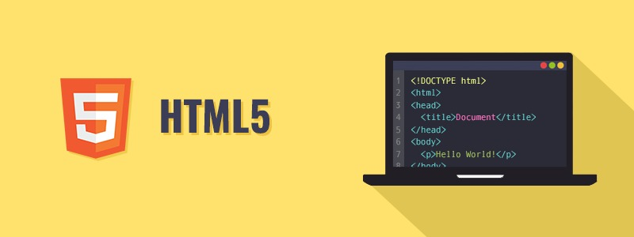
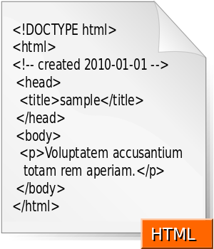
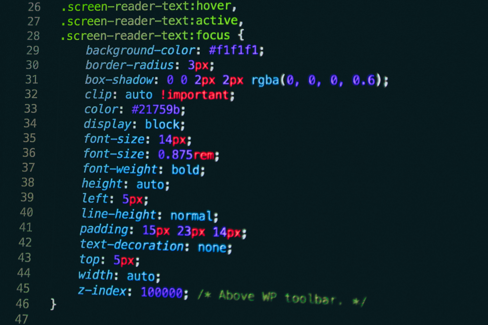

(1).png)
.png)




O que é HTML?
Criada pelo britânico Tim Berners-Lee, o acrônimo HTML significa HiperText Markup Language, traduzindo ao português: Linguagem de Marcação de Hipertexto. O HTML é o componente básico da web, ele permite inserir o conteúdo e estabelecer a estrutura básica de um website. Portanto, ele serve para dar significado e organizar as informações de uma página na web. Sem isso, o navegador não saberia exibir textos como elementos ou carregar imagens e outros conteúdos.
Os hipertextos são conjuntos de elementos conectados. Esses podem ser palavras, imagens, vídeos, documento, etc. Quando conectados, formam uma rede de informações que permite a comunicação de dados, organizando conhecimentos e guardando informações.
Ao visitar uma página simples na web, você pode perceber que existem diferentes distribuições e tamanhos para títulos, parágrafos, imagens, vídeos e qualquer outro elemento. Essa estrutura é estabelecida através do HTML. No inicio da web, era comum encontrar sites apenas contendo textos e imagens simples, com estrutura básica e sem estilizações. Porém, nos dias atuais, muito dificilmente você encontrará sites que possuam apenas elementos HTML. Portanto, podemos considerar o HTML o “esqueleto” da sua página.
Imagine então que além do esqueleto, é necessário ter o corpo. Para isso, temos então as linguagens CSS e o JavaScript, que em conjunto com HTML, formam a base para todos os websites atuais. Veremos mais à frente o que significam essas linguagens.
Como funciona o HTML?
Através de um documento HTML, ou seja, um documento com a extensão .html ou .htm., o navegador faz a leitura do arquivo e renderiza o seu conteúdo para que o usuário final possa visualizá-lo. Os arquivos .html podem ser visualizados em qualquer navegador (como Google Chrome, Safari, ou Mozilla Firefox).
Geralmente um site é composto por diversas páginas HTML, como por exemplo: um website que contenha três páginas (uma homepage, uma página de contato e uma página de produtos) receberá ao menos três documentos .html distintos, sendo uma para cada página do website.
O código pode ser escrito através de qualquer editor de texto, como o próprio bloco de notas. Cada página consiste em uma série de tags (também chamados de elementos) que podem ser considerados os blocos de construção das páginas. Portanto, esses blocos são a maneira com a qual o HTML faz a marcação dos conteúdos, criando a hierarquia e a estrutura do mesmo, dividido entre seções, parágrafos, cabeçalhos, e outros.
Principais tags do HTML

O que é CSS?
CSS é chamado de linguagem Cascading Style Sheet e é usado para estilizar elementos escritos em uma linguagem de marcação como HTML. O CSS separa o conteúdo da representação visual do site. Pense na decoração da sua página. Utilizando o CSS é possível alterar a cor do texto e do fundo, fonte e espaçamento entre parágrafos. Também pode criar tabelas, usar variações de layouts, ajustar imagens para suas respectivas telas e assim por diante. CSS foi desenvolvido pelo W3C (World Wide Web Consortium) em 1996, por uma razão bem simples. O HTML não foi projetado para ter tags que ajudariam a formatar a página. Você deveria apenas escrever a marcação para o site.
Tags como <.font> foram introduzidas na versão 3.2 do HTML e causaram muitos problemas para os desenvolvedores. Como os sites tinham diferentes fontes, cores e estilos, era um processo longo, doloroso e caro para reescrever o código. Assim, o CSS foi criado pelo W3C para resolver este problema.
A relação entre HTML e CSS é bem forte. Como o HTML é uma linguagem de marcação (o alicerce de um site) e o CSS é focado no estilo (toda a estética de um site), eles andam juntos. CSS não é tecnicamente uma necessidade, mas provavelmente você não gostaria de olhar para um site que usa apenas HTML, pois isso pareceria completamente abandonado.
Como CSS Funciona?
O CSS é uma ferramenta muito potente que possibilita criar diversas funcionalidades ao invés de usar JavaScript ou outra linguagem mais pesada. Se usado com moderação, CSS pode viabilizar uma ótima experiência ao desenvolvedor e usuários das páginas web. Com o Cascading Style Sheets é possível criar animações complexas, criar efeitos com uso de parallax, que faz parecer que a imagem de fundo tem uma profundidade diferente um dos outros, criar sites interativos e também jogos com HTML5 e CSS3.
O CSS usa uma sintaxe simples baseada em inglês com um conjunto de regras que o governam. Como mencionamos anteriormente, o HTML nunca teve a intenção de usar elementos de estilo, apenas a marcação da página. Foi criado para descrever apenas o conteúdo. Por exemplo: <.p>Este é um parágrafo.<./p>.
